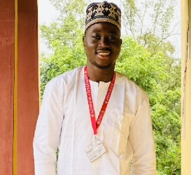

Slack Profile

Name:Ojo John Oluwasegun
Oluwaswgunfunmi1️⃣
Email:j.ojojamb201@yahoo.com
j.ojojamb201@yahoo.com
Current Time UTC:
--:--:-- UTC
Current Day:
---
My Goals
- Master Full-Stack Development: Aim to deepen my expertise in both front-end and back-end development, focusing on mastering popular frameworks and technologies such as React, Node.js, and MongoDB. By enhancing my understanding of the entire stack, I aim to build robust and scalable web applications.
- Specialize in Artificial Intelligence and Machine Learning: I plan to delve deeper into AI and ML, gaining proficiency in frameworks like TensorFlow and PyTorch. My goal is to apply these skills to real-world problems, particularly in areas such as natural language processing and computer vision
- Contribute to Open Source Projects: I aspire to actively contribute to open source projects, not only to improve my coding skills but also to give back to the community. I aim to collaborate with developers worldwide, learning best practices and making meaningful contributions.
- Stay Updated with Emerging Technologies: Technology evolves rapidly, so I commit to staying current with emerging trends such as blockchain, edge computing, and serverless architecture. I aim to experiment with these technologies to understand their potential applications.
- Gain Professional Certifications: I plan to pursue relevant certifications such as AWS Certified Solutions Architect, Google Professional Cloud Developer, and others that align with my career aspirations. These certifications will validate my skills and knowledge in cloud computing and related fields.
- Build a Strong Professional Network: Networking is crucial in the tech industry. I aim to attend industry conferences, participate in meetups, and engage in online communities to connect with like-minded professionals, mentors, and potential collaborators.
- Improve Soft Skills: In addition to technical skills, I recognize the importance of soft skills such as communication, teamwork, and time management. I aim to continually improve in these areas to become a well-rounded and effective team member.
- Start a Personal Tech Blog: I plan to launch a tech blog where I can share my learnings, experiences, and insights. This will not only help me solidify my understanding of complex topics but also contribute to the broader tech community.
- Mentorship and Teaching: As I advance in my career, I aim to give back by mentoring aspiring developers and teaching others what I have learned. I believe in the power of knowledge-sharing to foster growth and innovation in the tech industry.
- Advance Towards a Leadership Role: Ultimately, I aspire to grow into a leadership position where I can influence technical decisions, mentor teams, and contribute strategically to the success of projects and organizations.